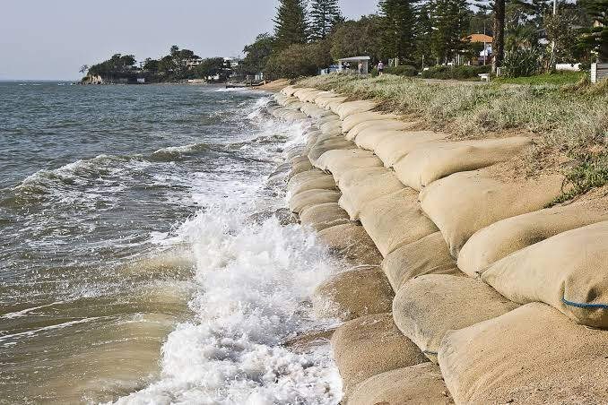

While sea level rise is a serious challenge, there are many ways we can reduce its impact. Governments, businesses, and individuals all have an important role to play in protecting our environment.
Reduce greenhouse gas emissionsUse renewable energy such as solar and wind power. Reduce the use of fossil fuels. Improve energy efficiency in homes and businesses.
Protect coastal areas. Build sea walls and flood barriers. Restore wetlands and mangroves. Improve coastal planning and development.
Save energy at home. Walk, cycle, or use public transport. Recycle and reduce waste. Support environmental projects and organisations.
By working together, we can slow climate change, protect vulnerable communities, and help reduce the effects of rising sea levels for future generations.